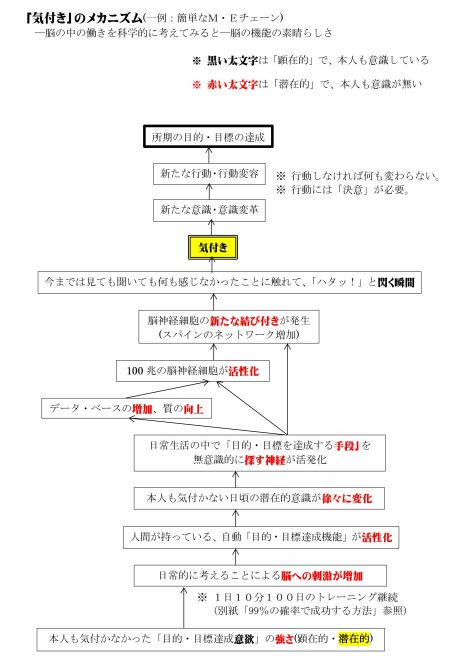
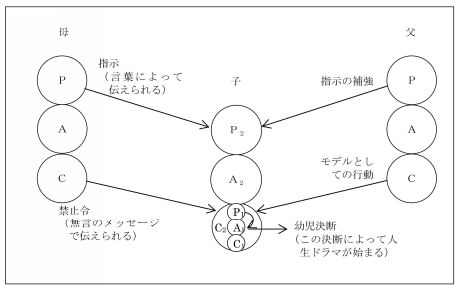
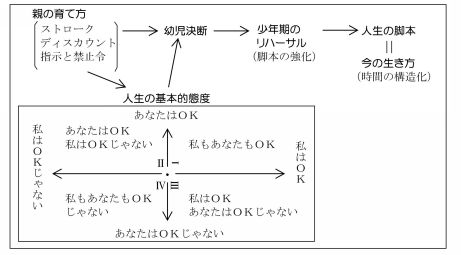
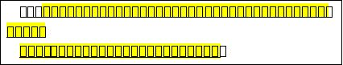

| 「マネジメントの真髄」シリーズ19(30巻予定): 成功する経営の原理 原則「人間心理・集団心理・組織強化・リーダーシップ」編 「マネジメントの真髄」シリーズ(30巻予定) | |
| 冨澤 翕 | |
| UNKNOWN (2016) | |
マネジメントの真髄
シリー ズ 19
(そ の2) 「人間心理・集団心理・組織強化・リーダーシップ」編 No.1 1
「これで、人は動く・組織は強くなる」
シリー ズ 1 9 も、
読者のご質問・ご要望にお応えした「追加の章」で す 。
第 3 5 章～ 第 4 0 章 は 、 ＴＡ関 連 の続きです。
第 4 1～ 4 3 章 は 、 下記のご質 問 にお応えした章です。
●これらについても、企業ニーズに沿った「トレーニング(研修)」を行い高い成果を出しています。
ご質問 ... 第 4 1 章は、 営業マン育成の為 の 上司・インストラクターに必要な基礎能 力 として「どのような能力を身に付けたら良いでしょうか？」
ご質問 ... 第 4 2～ 4 3 章は、「 作業教育の考え方と具体的な方法 」を教えて下さい。
・ 第 4 2 章は 、 作業教育のニーズと方法
・ 第 4 3 章は 、 教える為の4段 階 (作業教育の一例)
「人間心理・集団心理・組織強化・リーダーシップ」編 No.11
の 「目次」
第35章： 生産的な時間の使い方 ―時間の構造化―
１．時間の構造化の欲求
２．時間の構造化の６つの方法
1)引き籠り（自閉）
2)儀礼（儀式）
3)社交（雑談、気晴らし）
4)活動（しごと）
5)ゲーム
6)親密（親交、親和）
第36章： 時間の構造化の６つの方法の"補足"
1)～6) ...略
7)最後に
(1)敗者は、敗者としての脚本と闘う
(2)時間というものは、ストロークを得たり、与えたり、
回避したりする過程の中で構造化される
第37章： 今までの自分の生き方を考える
―人生脚本の分析―
1.Ｙさんの問題とその生い立ち
2.人生脚本とは
3.どのようにして人生脚本が出来るのか
4.３種類の人生脚本
第 3 8 章 ： 新しい自己への出発
第 3 9章 ： 自己変容のポイント(例)
第 4 0章 ： 私の特性を変革する為の着眼点
第 4 1 章： 営業マン育成の為 の 上司・インストラクターに必要な基礎能力
第 4 2 章 ： 作業教育のニーズと方法
第 4 3 章 ： 教える為の4段階
生産的な時間の使い方
―時間の構造化―
１．時間の構造化の欲求
私達職場で働く人間にとって、仕事が終ってほっとした時に、「今日は意義のある一日であった」と言えることほど素晴らしいことはないであろう。
そのような一日を考えてみよう。
そのような日には、「思いの外いろいろな仕事を片付けることが出来た」とか、「全力で仕事に集中出来、懸案の仕事を完成させ上司から褒められた」とか、「職場の同僚と激しい議論をやったがお互いに理解し合って素晴らしい案を作り上げた」、というようなことがあった筈である。
また、ある人にとっては、「お客様に対して真心を込めてやった仕事が評価されて感謝の言葉を頂いた」とか、「大きな商売に成功して周囲の人から拍手を送られた」、といったことがあった一日だったかもしれない。
これに反して、帰り掛けに「今日の一日は何と意味の無い一日だったろうか」と思わざるを得ないような日は、どんなことがあった日だったであろうか。
やる仕事も無いまま新聞や雑誌あるいは資料に目を通して、「何もせずに終ってしまった」とか、「ただ忙しさに追い回されて何をやったのか分からないままに終ってしまった」とか、「あまり意味の感じられない会議に参加させられて、ただお付き合いで過ごしてしまった」とかいう一日だったかもしれない。
また、「一所懸命にやった仕事だったにも拘らず何の評価も貰えなかった」とか、「一軒目のお客様の所で断られた為に喫茶店とパチンコ屋で無為に過ごしてしまった」とか、あるいは「大きな問題を起こしてしまい厳しい叱責と嘲笑の中でいたたまれない思いをした」とかいう一日だったという場合もあるであろう。
会社を離れても同じことが言える。
久し振りに「親友と会って一緒に飲みながら楽しい時間を過ごした」とか、「家族との団欒の時が持てた」とか、「興味のある本を一気に読み上げてしまった」とか、「趣味の日曜大工やプラモデル作りで素晴らしい作品を作り上げた」とかいう一日は、「充実した一日だった」と感じることが出来る。
その反面、「一日やることもなくブラブラと過ごしてしまった」とか、「家族と言い争いをやってしまった」とかいう一日の終りには、「ああ、勿体ない時間の使い方をしてしまった」と思うことがある。
人間の生き方や生き甲斐というものは、その人が自分の時間をどのように使うか、ということと深い関連を持っている 。
T A では、時間を有意義に配分して使うこと を 「時間の構造化 」 と言う が、時間の構造化は、人間の基本的な欲求の一つと言える。
何の意味も無いことに時間を使ってしまうほど、私達にとって不愉快で辛いことはない。
「春秋に富む」若者にとってはあまり感じないことかもしれないが、「日暮れて道遠し」の年配者にとっては「時は命なり」で 、1分1 秒たりとも無駄にしたくない、と思っているようである。
実は"時間の構造化"の欲求は、ストロークの欲求と深い繋がりがある 。
人間が生きて行く為には、肉体的に食物や休養が必要不可欠であるのと同じように、精神的・心理的にはストロークが必要不可欠であることは前に説明した。
※ 私達が社会的な生活をする上で、 人との接触
から得られる刺激を「ストローク」 と呼ぶ 。
※ 「ストローク」という言葉の意味は、日本語
に直訳する と" 撫で る " " さす る " " 愛撫す る" など
の意味があるが、 ＴＡでは 、 " ある 人( 他の 人) の
存在を認める為の行動や働き掛 け" であると定
義付けられている。
人間は 、 独りぼっ ち になって他者と全く接触を持てない状態になると、どうしようもないほど寂しくなってしまって、どうして も 「自分の存在を認めて貰いたい」という飢餓 感 に襲われる 。
そして、自分の望む触れ合いを求めて、自分の時間をどのように使うかという飢餓感を持つようになる。
つまり、生き甲斐を感じて生きて行く為には、どのようにして生きるか、どのようにして時間を使うか、という「時間の構造化」の欲求を持つようになるのである。
2.時間の構造化の６つの方法
私達がストロークを与えたり、受けたり、また避けたりす
る為に、どのように時間を構造化しているのであろうか？
社会生活や対人関係の場面において、私達が時間を構造化する方法には次のような６つの方法がある。
1)引き籠り（自閉）
"引き籠り"とは、 物理的にも心理的にも 自分の殻の中に引き籠ってしまうこと である。
だから、人と一緒にいても、心はそこから離れていて、過去の出来事を追憶したり、空想したりといった、いわゆる 心がどこかへ行ってしまっているような状態になっている時は、"引き籠りで時間の構造化を図っている" ことになる。
もっと積極的な"引き籠り"もある。
身心が疲れた時に、人とのやり取りの場を離れて独りで寛いだり、考えを纏めたりして身心の休養を図り、エネルギーを蓄えるが、それも「引き籠り」と言える。
また、他の人から見て活動しているような状態も、時によってその当人にとっては「引き籠り」と言えることもある。
例えば、プラモデルを作ったり読書をするという行為は、他の人から見ると一見別の時間の構造化である"活動"のように見えるが、その当人が、周囲とのやり取りを避ける為にプラモデルを作ったり読書をしているのであれば、それは「引き籠り」と言える。
引き籠りは、 他の人とのストロークのやり取りが無い状態 であるが、その代りに、 他の人との関わり合いの中で生じるかもしれない心理的な感情の危険も無い状態 である。
2)儀礼（儀式）
「おはようございます」
「今日は！」、「お元気ですか」、「暑くなりましたね」...、
こんな日常の挨拶を交す場面を始めとして、私達の社会生活の中では、 慣習や伝統、文化などによって、 一応の人とのやり取りの仕方の型が決まっている 時間の使い方 がある。
これを 「 儀礼 」 と言う。
そのようなものとしては、いろいろな式典や毎 週( あるいは毎 月) 行われる会議などが、典型的なものと言える。
例えば、「今日の会議の議題は自分にはあまり関係が無いのだが、一応会議のメンバーなので出席しなければならない」などと思って出席している会議などの時間は、"儀礼"によって時間が構造化されていると言える。
" 儀礼"は、自分で積極的に時間を構造化する方法ではない 。
しかし、 ストロークのやり取りをする為のウォーミング・アップとしては重要な意味がある 。
"儀礼"に従って他者とやり取りをしている限りは、そのやり方が一応決まっているので心理的な危険をあまり感じずにストロークのやり取りが出来るのである。
しかし、"儀礼"では、形式的な浅いストロークのやり取りは出来ても本当の自分をそこに投入出来る訳ではないから、 結局は空しさが伴う ものとなってしまう。
3)社交（雑談、気晴らし）
セールスマンがお客様との接渉に入る前には、いろいろな
話題を出して雰囲気を和らげてから本題の話に入ることが多い。
天候の話、景気の話、車、趣味のゴルフ、服装、流行、スポーツ、先日の旅行の話、たわいのない雑談。
こうした話し合いでの時間の構造化を「 社交 」 と言う。俗に言う 「 おしゃべり 」 とも言える。
"社交"でのストロークの交換は、"儀礼"による形式的なストロークの交換よりは中味の濃いストロークの交換が出来るが、それでも、やはり浅いストロークの交換だと言える。
だから、 人との本当に深いやり取りへの出発点の一つではあるが 、 "社交"ばかりでは本当の人間的触れ合いの持てる関係にはなって行かない 。
4)活動（しごと）
"活動"は、何かを達成する為にの自我状態を使っている状態 と言える。
職場で働く人間にとっては、"活動"の多くは 仕事そのものであったり 、 仕事と関連のあるもの である。
例えば、仕事の為に打ち合わせをする、手紙や書類を書く、機械を組み立てたり操作する、資料や書類を調べたり整理する、新しい知識や技術を学ぶ...等々が「活動」と言える。
仕事以外の活動もある 。
例えば、趣味で何かをやったり、家庭での雑事をするなどがその例と言える。
一人だけでやる"活動"は、一見するとストロークの交換が無いように見えるが、仕事を上手く為し遂げれば、周囲の人から認められたり褒められたりするから、かなり中味の濃いストロークのやり取りが期待出来る。
しかし、そうは行かない場合もあるので、それだけ心理的な危険も含まれていると言える。
また、 "活動"の中には、他のいろいろな"時間の構造化"の方法が入り込んで来る可能性 のあることを知っておくと良い。
多くの活動には他者との相互作用が含まれているから、当然その中には"儀礼"や"社交"も含まれて来る。
また、"活動"だと見える状態でも、当人にとっては"引き籠り"の意味が強いといったこともある。
5)ゲーム
心理的ゲームについては、前に説明した通りである。
人々がゲームを始めるのはストロークが欲しいからなのであるが、 ゲームで得られるストロークは激しい否定的なストローク である。
そうではあっても、ゲームから得られるストロークは"儀礼"や"社交"のやり取りで得られるストロークよりも、かなり中味の濃いストロークと言える。
心理的ゲームを繰り返していると 時間は非生産的に 過ぎて しまい、 お互いに 生産的な時間や楽しい時間が失われて しまう 。
私達の人生、即ち時間は無限では無い 。
だから、なるべくゲームによる非生産的な時間から解放される必要がある。
「時は金なり」なら ぬ 「 時は命なり 」 なのである。
6)親密（親交、親和）
人間は、 人との接触が無い状態ではストローク飢餓の状態に陥る 。
しかし、 人との関り合いの場面で本当の自分をはっきり出してしまうと、いろいろな摩擦が起こったり、激しい葛藤に苦しむことになってしまう ことが、決して少なくない。
本当の人との関り合いを持つには、大きな心理的危険を冒して行かなくてはならない のである。
自分には裏の意図など全く無くて言ったことなのに、相手が異なった意味に受け取り、その為に誤解を招いたとか、レッテルを貼られたとか、気付かぬところで人を傷付けていた、とかいった 苦い経験の中で、私達は段々と 本当の自分では無い自分によって人との関り合いを持つようになってしまっている ことが多い ものである。
その結果、時間の構造化で言うと、"儀礼""社交""ゲーム"などが多くの時間を占めることになる。
けれども、 人との関り合いがその範囲に止まる限り、共感と愛と尊敬に支えられた真の人間関係は作り上げられない 。
本当の人と人との結び合いは、"親密"の中にある 。
"親密"というのは、お互いに相手に共感が持てる状態である 。
共感があって始めて、相手の価値を認めることも、その人を大切と思うことも出来るし、自分を安心して出すことも出来るのである。
あるがままの自分の価値を貶めたりせずに、そのまま受け止めて貰える信頼があるからである。
そこから尊敬も生まれる。
職場で何年も一緒に仕事をしている仲間であっても、お互いに本当に"見詰め合い"、相手の言っていることを真剣に"傾聴する"と言うことは、滅多にあることではない。
家庭生活の中の夫婦の間においても同様のことが言える。
確かに親密の関係は、 本当の自分と向かい合う関係なので傷付く危険が背中合わせになっている と言える。
だが、お互いに 心を開いて相手の人格を認め合い、相手と真の心の触れ合いが出来るなら 、 そこでは最高のストロークのやり取りが行われる ことになる。
そして、 「私もあなたもＯＫ」 である、という人間関係が作り上げられ、真に自由な自己への変革の道を歩み出すことが可能となるのである。
さて、これまで時間の構造化の６つの方法について説明して来た。
では、あなたは、どのような時間の構造化をしているのであろうか。
どのようなストロークを求めて、どのような方法で、"今ここ"の現在を、そして一日、一週間、一ヵ月、一年、一生を、どのように構造化して行くのであろう。
今までの"時間の構造化"の仕方を知るのと同時に、これからは、どのように"時間の構造化"を図って行くのかを考えてみることも大切なことである。
時間の構造化の６つの方法の"補足"
1.引き籠り（自閉）
引き籠りは、３つの自我状 態( ）のいずれからも起こる。
1)両親の模倣に基づいていることがある
［例］
両親が喧嘩をした時、母親の怒りに対して父親が家を出たり、勤め先に隠れたり、書斎に入って研究に没頭したり、寝てしまったり、あるいは母親の言い分に耳を貸さないで追い払ってみたりした場面を見ていたとする。
すると、同じような状況に置かれた自 分(夫) は、父親の態度をそのまま実行することがある。
2)子供の自我状態から生じることがある
苦痛や葛藤などから自分を守る為に、子供時代に用いた適応方法を再現していると見做される場合が多い。
これはまた、躾の結果である場合もある。
［例］
子供時代に、親から「自分の部屋に入って反省しなさい。『悪かった』と思うまで出て来るんじゃない！」などと、何度も言われてその経験を積むと、無理に自分を悪者にすることによって、心理的にないしは身体的に"引き籠る"ことを学んでしまう。
大人になってからも、これと類似した状況に出会うと同様の適応方法を取ってしまうことがある。
3)成人の合理的決断に基づいていることがある
［例］
誰にも必要とされることだが、一人でリラックスする、空想す る( 無意味なＴＶ番組を見るよりは、好ましい空想にふける場合の方が時間の使い方としては適切である場合もあ る) 、自己を洞察し個人的な人間性を回復する、など。
なお、空想する場合、その内容が社会的に許されない快楽や暴力、あるいは学習された恐怖や破滅的な期待などがある。
これらの空想を"自分だけがする空想"と思い悩んでいる人がいるが、これらは誰にでもある空想であり、その意味で悩む必要は無い。
2.儀礼（儀式）
単純で、固定化された相補的やり取り である。
［例］
Ａ「こんにちは。お元気ですか」
Ｂ「やあ、こんにちは。元気ですよ。あなたはいかがですか」。
このように「こんにちは。お元気ですか」という場合、大抵は相手の健康や気分を実際に尋ねているのでは無 い( 「感情的意味合い」が殆どで、「技術的意味合い」は稀である）。
尋ねた人は、「元気です。あなたはいかがですか」という儀式的反応を相手に期待しているのである。
（あなたが「元気？」と声を掛けた相手から、「いやあ、実は調子が悪くてね。...」といったような反応を貰って戸惑ったことはありませんか）
このちょっとした出会いによって、 両者 は 現状維持のストロークを互いに獲得す る のである。
この儀 礼( 儀 式) の多くは、社会的な相互作用を円滑にする機能があるので、形式的な浅いストロークしか得られないとはいえ軽視する訳には行かないのである。
3.社交（雑談、気晴らし、暇潰し）
社交は、儀 礼( 儀 式) と同様に 人々が 互いに礼儀正しく時を
過ごす方法 であり、これによって 心の奥底を掻き乱されることは無い 。
だが、次の例のように、 事実がどうであるかということには全く無関係に、互いの意見を次々と交換しあい、瞬時を楽しむだけに終ってしまうことも多い 。
［例］
Ａ「近頃の若い者ときたら全くひどいもんだ。挨拶もろくに出来ん」
Ｂ「全く。家庭教育がなってないんでしょうなあ」
Ａ「政治の頽廃にも原因がありそうですな」
Ｂ「それに学校教育にも問題あり、ですな」
Ａ「全く誰も真剣に考えようとしないんですから、困ったも
のだ」
......
4.活動（仕事）
活動は、 外界の現実を処理することによって時間を構造化
する方法 である。
それ は、普通、 仕事や何かを完成させることを意味 し、 肯定的ストロークを生み 、 勝者〈注１〉としての成長に役立つ 。
但し、ある活動が終ってしまうと人間は屡々空虚な気持ちになり、イライラしたり、自分を無力なものに感じたりすることがある。
［例］
1)育児と家事で十分に時間を構造化していた母親 の多くは、子供が成長して家を離れると退屈し、「自分は環境の変化に適応出来ない」という気持ちに圧倒されてしまう。
その他、
2)受験に合格した学生。
3)家を建てた人。
4)目標としていた役職に就いたサラリーマン。
5)定年退職したサラリーマン。
...等々。
以上のような現象は多くの人に多々見られる。
これは、長期目標を持たない人が、当面の目 標( 短期目 標 )
を達成した場合に見られる。
長期目標と短期目標の双方を持った上で活動する習慣が必要 である。
●●〈注１ 〉 シリー ズ 1 6 「人間心理・集団心理・組織強化・リーダーシップ」 編 No. 8 ： 第 2 8 章 ： T A 用語の「勝者」と は (5 6例) を参照。 ●●〈注１〉終り
５．ゲーム
６．親密（親交、親和）
親密の為の能力が、図らずも長い間抑圧されていたような
場合でも回復は可能である。
「成人」の自我状態を刺激し強化することによって、 初期の人生経験を克服して自己変革を行うことが出来る 。
親密の能力を回復もしくは向上させることが「成人 」 ( ) の主要な目的であり、それこそ自律的人間の特徴の一つである。
勝者(となる者)は、敢えて、純粋な親密の能力回復もしくは向上に挑 む 。
7.最後に
1)敗者は、敗者としての脚本と闘う。
つまり、敗者が「勝者としての脚本」を書き、その脚本に
従う為の強い決意が無ければ、「敗者としての脚本」を更に強固なものにしてしまうし、敗者は他の人々をも敗者として巻き込む恐れがある。
2)時間というものは、ストロークを得たり、与えた
り、回避したりする過程の中で構造化される。
(1 ) 引き籠り(自閉)は、ストロークのやり取りが無い状態。
(2)儀礼(儀式)と社交(雑談、気晴らし、暇潰し)は、表面的
なレベルでの必要最小限のストロークを提供する。
(3)ゲームもまた否定的なものではあるけれども、屡々スト
ロークの源泉となる。
(4) 活動(仕事)と親密(親交、親和)は、 肯定的なストローク
を生み、勝者としての成長に役立つ 。
今までの自分の生き方を考える
―人生脚本の分析―
１．Ｙさんの問題とその生い立ち
〈ケース〉
Ｙさん は 3 8 歳。ある電機会社の工場の品質管理課の係長である。昨年の秋にやっと念願の係長に昇進し、今年の春に新任係長研修に参加した。
ところが、Ｙさんはその研修以来、どうも自分のことについていろいろな問題を感じることが多くなって来ている。
それまでは、特に「自分とは一体どんな人間なのだろうか？」という問題について、あまり深く考えるという必要も無かったし、またそうした機会にも恵まれなかった。
ところが、新任係長研修のプログラムの中に「お互いの成長の為に、参加者が相互に建設的な忠告をし合う」という会合があり、その会合の中で、新任係長の仲間からかなり率直なアドバイスを受けたのである。
これらのアドバイスのうちの幾つかは自分でもそれなりに自覚をしていたものであったが、全く初めて言われたものもある。
それらは、
1)自分の能力を実際よりも低く見ていて、劣等感に陥っていることが多いようだ。
2)他者、特に上役や年上の人に対しては、自分の思ったことが言えず、どうしても相手の言う通りになってしまったり、相手の顔色を窺う傾向がある。
3)ところが、一方では部下や後輩に対しては頑固であり、なかなか相手の言うことを受け入れない。
4)自分の気持ちを率直に表すことが出来ない。その為、人からは「とっつき難い」「何を考えているのか分からない」ように見える。そして時には、「反応が鈍い」ように感じられる。
5)周囲の人の中に溶け込んで行けない傾向があり、「人は人、自分は自分だ」と割り切っている。
などである。
Ｙさんは、ある東北地方の農村で生まれ、そこで育った。お父さんはその村の警察官であり、かなり厳しくＹさんを教育した。
例えば、Ｙさんが風邪をひいて頭痛がしていた時でも、「男の子だろ！ それくらいのことで学校を休む奴などいるか！この弱虫！ 馬鹿者！ さあ来い！」と言われ、無理矢理に自転車の荷台に乗せられ、学校に連れて行かれたことが何度もあったという。
こうしたことだけでなく、お父さんの教育というのは一事が万事大体こんな風で、しょっちゅう叱られた。
この叱られる時は、必ずと言って良いくらい、「この馬鹿者！ そのくらいのことが出来んのか！」とか「こんな問題が分からないなんて！ 全く馬鹿な奴だ！」と「馬鹿」という言葉を浴びせられている。
Ｙさんのお母さんという人は、どちらかというと古風な人で、第一にお父さんを立てる人であった。
Ｙさんには心から愛情を注ぎ育ててくれはしたが、お父さんがＹさんを叱っている時には、たとえそれがＹさんの誤ちではないと分かっていても、お父さんに対して何も言わず黙っていることが多かったという。
Ｙさんは、自分と妹と弟の三人を、あまり豊かではない家計の中から無理をして高校まで進学させ、世の中へ出してくれた両親に感謝の気持ちは持っているが、子供時代の親、特に父親については良い印象を持っているとは言い難い。
小学校から高校まで、Ｙさんの学校の成績はクラスの上位の方であった。
しかし、小学校の時代から無口で、友達から誘われると一緒に遊びはするが自分の方から誘うということは無かったようである。
Ｙさんは、最近よく子供時代の自分と今の自分を比較して考えてみることがある。
高校を卒業し、今の会社に入っても う 2 0 年にもなる。
確かに、こ の 2 0 年の間に結婚もしたし、子供も二人生まれた。
いろいろな出来事もあって、自分で自分を「成長したな」と感じる部分もあるが、何だかよくは分からないけれども「ちっとも変わらない」という気がすることも多い。
子供の時には、いつでも父親の顔色を気にして、思い切って自分の思うように何かをすることがなかなか出来なかったが、今でも課長や部長の顔色をついつい窺ってしまう。
顔色を窺ってしまう為、自分の言いたいことを言えなくなってしまうのも子供時代と同じなので厭になってしまうことがある。
Ｙさんは、仕事の上でもあまり自信を持つことが出来ない。課長から、「今度の新製品の品質安定化には、よく努力し
てくれたね」などと褒められても、「はい、ありがとうございます。でも課長のおっしゃる通りにやっていただけですから...」などと答えてしまい、本当に心から喜べるといったことが少ないのである。
またそんな時に、何か心のどこかで自分に向かって「この馬鹿者！ その程度のことは誰にでも出来ることだぞ！」といった声が聞こえて来るような気がすることもある。
そのくせ、父親とよく似たところも持っていて、人に対して厳しいところがある。
Ｙさんは口でこそ言わないが、心の中では後輩達のやることに対して、「ああいったやり方では上手く行きっこないよ」とか「仕事のやり方がだらしない」とか思うことが多い。
先輩だからそれを注意したり、教えてやれば良いのだが、何としても口に出しては言えないのだ。
言った後がどうなるかを考えると、不安が先に立って言えなくなるのである。
Ｙさんは、今の自分のこうした状態について、「人間の生き方というのは、随分と親からの影響を受けるものだ」と、つくづく感じている。
そして、どうしてこうした自分が出来上がったのか、こうした自分をより良い方向へ変えて行く為の方法は無いのか、いささか憂鬱な気分で考えている。
さて、こうしたＹさんの問題に応える為に、今まで学んで来たことを総括的に見て行こう。
ＴＡでは、これを 「人生脚本の分析」 と言う。
2.人生脚本とは
人の一生は、いわば一遍の「ドラマ」だ と言われている。
ドラマだとすると、当然一つの脚本があり、その脚本の中
に書かれている役割を演ずる俳優がおり、そして、その俳優がその役割を演ずるに相応しい舞台がある、という訳である。
確かに、そういう目で人の生き方、つまり人生を見ていると、ケースに示したＹさんの例のように、何か一つのテーマがあり、そのテーマを繰り返し、繰り返し演じているように見える人が多いのに気付く。
ある人は、何事においても新しいものに飛び付き、暫くの間はそれに熱中するが、何かに徹底するということが無く、何事も中途半端に終ってしまう。
そうした人は、仕事にしても趣味にしても、絶えず中途半端にして次のことに移って行く。
これとは対象的に、何事においても徹底してやらないと気が済まない、という人もいる。
そうした人は、一つの仕事に打ち込み、あまり他の仕事へ眼を向けるといったことが無い。
仕事ばかりでなく、他のことにも同じような姿勢や態度が見えるものである。
私達の周囲にはいろいろな人がいる 。
だが、よく見ると、 その人なりの独自の生き方を持っている ように見える。
そうした生き方は、時々次のような短い言葉や文章で表されることがある。
「七転び八起き」
「石橋を叩いて渡る」
「目標を達成するまでは...」
「何でも一番にならないと気が済まない」
「倒れてのち已む」（死んで、やっと止める。生きている限り、へこたれないで努力する）
「お人好し」
「じっと我慢の子」
「負け犬」
「一所懸命にやる」
「必ず成功する」
......
人はこれらの言葉に表されるような行動を、知らず知らずのうちに繰り返して生きている のである。
もし、人生が一遍のドラマだとすると、これらの短い言葉は、その ドラマの「テーマ」 と言って差し支えないであろう。
ＴＡでは、 人は誰もが皆、その人なりの生き方についての脚本を持っており、その脚本に書かれた筋書きに従って、そこに書かれている役割を自分の人生という舞台の上で演じている という捉え方をしている。
そして、その 脚本の基になるものは、子供時代に両親から与えられるものだ と考えている。
Ｙさんのケースでもよく分かるように、Ｙさんの性格や生き方は、やはりお父さんから与えられた影響が今でも強く残っていると言える。
例えば、上役や先輩に対しては相手の顔色を窺い、どうしても自分の意見を言えない点や、自分自身のやっていることに自信が持てない点、自分の気持ちを率直に打ち明けられず人に溶け込んで行けない点、などがそうした例と言える。
このような問題のある生き方から抜け出して、自分が持っている能力をもっと生かした新しい生き方が出来るようになる為には、何よりも先ず、自分自身の"人生の脚本"がどのようなものであるのか、それはどのようにして作られて来たものであるのか に 気付 く ＜注１＞ 必要がある。
先ず、人生の脚本はどのようにして出来るか、という点から考えて行くことにしよう。
●●＜注１＞ 改善・改革・成長・発展...等々のスタート は 「気付き 」 であり、「気付く感性」を磨く為の努力が必要である。今までどおりの習慣では「気付く感性」も育たない。
そこで「気付きのメカニズム」を再再掲する。

3．どのようにして人生脚本が出来るのか
個人の心理的脚本の 最も基本的な部分を形成するものは、
親の育て方 の中にある。
人生脚本の最初は、感覚的に殆ど無意識のうちに書かれて行く。
生まれてか ら2 歳くらいまでは、 両親、特に母親との接触を通して得られるストロークの中から自分自身の存在価値 を感じ取って行く のである。
母親から優しく撫でられ、さすられ、頬ずりをされ、抱きしめられ、微笑みかけられ、語りかけられ、認められ、自分がこの世にあることを喜ばれた体 験( 肯定的な肉体的・心理的ストロー ク) を豊かに得ている子供は、恐らく、はっきりと意識はせずとも「私はＯＫである」という体験沢山持っていると思われる。
これに反して、子供に無関心な親、あるいは時として子供に憎しみや拒否感を持つ親の下で育てられた子供は、軽視や無 視( ディスカウン ト) 、叱る、つねる、打つ、といった否定的な肉体的・心理的ストロークを与えられる機会が多く、その中で不安や恐怖や敵意を醸成し「私はＯＫではない」という辛い経験を持っているものと思われる。
こうした人生のごく初期の段階で、人生に対する基本的態度の原型が作り上げられるが、具体的な事柄とそれを表す言葉とが理解されるにつれ、 大体３歳頃までには、 両親が言葉で伝える「人生脚本の基になるメッセージ」を十分に理解 し始める ようになるのである。
こうした メッセージの大半のものは、親が子供に対してこうあって欲しい、という"躾"や"期待"や"人生の生き方についての基本的なもの" である。
これは親のの自我状態から発信され、子供のの自我状態の中に組み込まれて行く。
こうしたメッセージを 「指示」 と言う が、子供のに組み込まれたこの指示が強力な場合には、その後のその人の人生において、一つの態度や行動を取り続けるよう駆り立てる働きをする。
こうした指示に縛られた状態に陥ってしまうと、やは、自分の中のから絶えず重圧を掛けられ、そこから逃げ出せない状態となってしまうのである。
このように、 親から与えられる指示は、 人生脚本の一部を構成する要素 となる。
そうした指示の例としては、
「もっと完全でなくては駄目だ」
「強くなくてはいけません。人に弱みを見せてはいけません」
「もっと急ぎなさい。もっと速くしなさい」
「親を喜ばせてちょうだい。(成長してからは)人を喜ばせて上げなさい」
「もっと努力しなさい。まだまだです」
などといったものが、よく見られる例である。
言葉によって両親が子供にいろいろな指示のメッセージを伝えている時に 、実は 態度や行動で別の意味のことを伝えていることがよくある 。
例えば、子供に対して「正直でなくてはいけません。嘘をつくことは良くないことです」と言葉で教えている親が、たまたま掛かって来た電話に子供が出て、「お父さん、電話だよ」と取り次いだ時に、自分が忙しかったり、相手の人が厭な人だったりすると、「『今、留守だ』と言っておきなさい」などと言ってしまうことがある。
こうした態度や行動は、「正直でなくてはいけない」という言葉と反対のことを教えていることになる。
つまり、親のは、子供に対して「時と場合によっては嘘を付いても良いのだよ」と教えている訳である。
同一の親の中のとから、互いに矛盾するメッセージが子供に伝えられると、十分にを発達させていない子供は戸惑ってしまう ことになる。
特に、感受性の強い子供にとっては、それは大人が想像する以上にショッキングな出来事であり、大きな混乱やストレス、ひいては人に対する不信感を生み出させてしまうことになるのである。
そして、結果としては、親が言葉で言ったことより、無言のうちに親のから発信されたメッセージの方が子供に対しては強い影響を与えることになる。
しかも、子供は強い感受性を持っているので、そうしたメッセージを実に敏感に感じ取って行くのである。
このような親のから発信されるメッセージの中には、 言葉で与えられる"指示"とは全く矛盾していて、しかも問題のある内容を含み、その子供の人生脚本の形成に大きな悪影響を与えてしまうものがある 。
その内容は、「 ～であってはいけない 」とか「 ～してはいけない 」とかいうように、 禁止的な言葉に書き直すことが出来るので 「禁止令」 と言う。
例えば、言葉では、「良い子だからあっちへ行って一人で遊んでいなさい」と何気なく言っていたとしても、その態度の中に、子供に対する愛情が欠けていたりすると、「私の傍に近付くな！」といった禁止令を与えていることになる。
また、言葉では、「お前もお兄ちゃんになったんだから、何でも一人でやりなさい！」と言っている母親が、子供が一人で洋服のボタンを嵌めている様子や靴を履こうとしている様子を見るに見かねて、「まったく不器用なんだから...」などと言いながらボタンを嵌めてやったり、靴を履かせたりしてやっている時には、「私がやって上げるのだから、自分でやったら駄目！」と言っていることになる。
多くの人の中には、問題のある強烈な"禁止令"を繰り返し、繰り返し与えられ、とうとうそれによって自分の人生の脚本を作ってしまい、破滅的な生き方をしてしまう人もい る( 後に詳しく触れるが、これらを変える方法はあ る) 。
特に人生脚本の形成に問題となる 禁止令 の 例 として、次のような例があるとされている。
「存在してはいけない！生きていてはいけない」
「感じるように感じてはいけない」
「自分で考えてはいけない」
「重要な者であってはいけない」
「私に近付くな」
「自分自身であってはいけない」
「成長してはいけない」
「子供らしくあってはいけない」
「健康になってはいけない」
禁止的な言葉で書き直されている為にちょっと理解し難いので、幾つかを例で説明しよう。
例えば、幼い頃に両親と死に別れ、成長するまでに多くの人の所で次々と盥回しにされながら育つ人がいる。
そのような人が、預けられる先々で、言葉では「お前は長男なんだから、しっかりして弟や妹の面倒を見てやれるように強い男にならなくちゃいけないよ」と言われながら、態度や表情や行為で「全く迷惑なことだ」とか、「お前さえいなければ...」とか、「チェッ！全く厭んなるよ！」とか、「厭ならどこへでも他所へ行きなさい！」といったサインを与えられ続けて育つと、子供のは、「ああ、僕は邪魔者なんだ、生きていてはいけないんだ！」というように受け取ってしまい、与えられた言葉とは裏腹の人間になってしまう訳である。
こうした問題のある 強烈な禁止令を絶えず受けて、それを自分の人生脚本の中に組み込んでしまう人は、"自殺"といったような破壊的な結末を持った人生脚本を書いてしまう場合もある 。
また、Ｙさんの例のように、厳しい親に育てられ、絶えず「男の子だろう、それくらいの怪我はちっとも痛くない！」とか、「それくらいのことで学校を休む奴がいるか、さあ来い！ お父さんが連れて行ってやる」といったように育てられると、 「感じるように感じてはいけないんだ！」といった禁止令 を受けてしまうことになる。
この例ほど強烈なものではないとしても、私達も親から育てられる過程で「何らかの禁止令」を受けているものと考えられる。
特に、 自分自身の生き方に大きな悩みや問題を感じている人は、自分のの中に組み込まれた禁止令を調べてみる必要がある 。
禁止令は、 一般的には 異性の親から与えられる もの、つまり母親から男の子へ与えられるもの、父親から女の子に与えられるものが最も影響力が強い と言われている。
こういう 禁止令を与えられた時に "どのようにしたら良いか"という行動の仕方については、 同姓の親からの影響力 が強い と言われている。
これらの、指示や禁止令、行動のプログラムについての関係を図にしてみると図表1のように表せる。
［図表1］指示と禁止令

こうした禁止令は、その内容から見ても分かる通り 「ＯＫでない」という否定的な影響を与える 。
つまり、「ＯＫでない」と言う人生の基本的態度を、更に一段と強化して行くこととなるのである。
こうしたことが続いて行くうちに、ある日突然、「私はこうして生きて行こう」という、自分の人生の生き方を決心してしまうのだと言われている。
これを 「幼児決断」 と言うが、その時期は６～７歳から12～13歳頃だと言われている。
幼児決断の内容は、大体において 親の愛情を保つ為に 、どんなにきつい要求や命令であっても自分を順応させて 親の要求に合わせる ものである。
例えば、Ｙさんの場合であれば、「親に話したってどうせ分かって貰えないんだ。話したって叱られるだけだ。それならもう何にも話さないで黙っていよう。そして、お父さんの言うことを聞いて黙って従っていこう」といった決意であったかもしれない。
一度こうした 決意を持ってしまうと、 後はその人生脚本に従って演技の繰り返しをして行くだけ である。
一度、「何も言わないことにしよう。お父さんの言うことを聞いて黙って従って行こう」と決意した子供は、それ以後、親や周囲の親のような人々からその決意の裏付けとなった反応を感じ取る度に同じような態度を取り続け、「これで良いんだ」と、いよいよその脚本を強化して行くことになる。
そして、更に成長してからも、自分の周囲にいる親のような人達に対して同じような態度を取るようになる。
つまり、少年期には人生脚本のリハーサルを行っているという訳である。
こうした態度は、人生の途中で、それまでの決心を覆されて "再決断"することを迫られるような大事件でも起こらない限り〈注2〉、一生持ち続ける ことになるのである。
●●〈 注2〉" 再決 断" することを迫られるような大事件は頻繁に起こるものではないので、Ｙさんのように、係長に昇進した際の「新任係長研修」などの場で、人生を見直す機会を提供することが多い。
但し、相当に信頼度の高いインストラクターの起用が望まれる。 ●●〈 注2 〉終り
さて、このようにして私達は今の自分の人生脚本を持つ訳であるが、今まで話して来た過程を図に表してみると図表２のようになる。
［図表２］人生の脚本が作られる過程図

４．３種類の人生脚本
人生の脚本には、大きく分けると「３種類の脚本がある」と言われている。
それは、 "勝利者の脚本" と "敗北者の脚本" 、そして "平凡な人の脚本" の３種類である。
多くの人の中には、 時には失敗することがあっても積極的に明るく人生を生きる人 がいる。
このような人を 「勝利者の人生脚本を持った人」 と言う。
勝利者の人生脚本を持った人は、自分に対して自信を持っていると同時に、他者に対しても基本的には信頼感を持っている人 である。
だから、仕事においても他者との交流においても、いつも建設的で生き生きとしている。
そして、自分で自分をコントロール出来、自分の人生に対しては自らその責任を負っている。
これとは反対に、 暗くて何か屈折したような人生を過ごす人 もいる。
こうした人を 「敗北者の人生脚本を持った人」 と言う。
敗北者の人生脚本を持った人は、自分に対して自信を失ってしまっており、他者に対しても基本的に不信感を持っている人 と言える。
だから、何となく暗い感じがして、非建設的な生き方しか出来ない。
多くの場合、過去のことを悔い、将来に対しては不安と疑問を持っており 、 "今、ここ " での場面で、自分が本来持っている能力を十分に発揮することが出来ない。
仕事においても他者との交流においても同じことが言える。
しかし、現実には、 "完全な勝利者"や"全くの敗北者"という人は殆どいなく て、大部分の人は、 ある時には勝利者であり、次の瞬間には敗北者 であるといった "平凡な人生脚本" を持った人なのである。
平凡な人生脚本を持った人でも 、 自分の人生脚本を少しでも勝利者に近いものとして行くことは可 能 なことである。
なぜなら、 自分で決めた自分の生き方は 、 自分の決心次第でいくらでも変えて行くことが出来 る からなのである。
大切なことは 、 「自分の人生を、より良い人生に変えてやろう」という"決意 " をすること なのである。
新しい自己への出発

これまでＴＡの理論を学んで来たが、それによって"人の生き方""人のあり方""人との関り合い"...等々といった基本的な部分は、その人の子供の時の生育過程の中で決定される、ということが明らかにされて来た。
私達は、子供の時の体験の中で知らず知らずのうちに形成された"自分なりの考え方"や"自分なりの感じ方(感情の持ち方)"、あるいは"自分なりの態度"や"自分なりの行動パターン"などの枠組みの中で生きている。
こうした枠組みの中には、自分が本来持っている能力の発揮を妨げるものもあり、あるいは、誰の目から見ても溢れるほどの能力を持ちながら、「自分は全く駄目な人間だ！全く無能力だ！」と自信を失っていて、その枠組みの中でしか動けない人もいる。
新しい生き方や新しいあり方を自分のものとする為には 、 先ず、"今、ここ"に存在する自分が、どのような生き方やどのようなあり方をしているかに気付くこ と が必要となる。
"自己への気付き"こそ"新しい自己への出発点" と言えるのであり、"自己への気付き"無くして"新しい自己への出発"無し、と心得ておくべきである。
ここで触れておきたい重要なことが一つある。
それは、対人関係を今までのパターンのものから新しいものに変えて行こうとする時に、私達が犯してしまいがちな大きな過ちがある、ということである。
それは、 対人関係が上手く行かない時に 、私達は多くの場合、 その原因を相手のせいだと考えて、相手を分析し相手を変えようとしてしまう ことである。
ＴＡでは、こう教えている。
「 相手の人を変えることは出来ない 。 変 えることが出来るのは、"今、ここ"にいる自分だ け である 。それは、過ぎ去った過去の自分でもなければ、まだ来ぬ未来の自分でもない 。 "今、ここ"にいる自分が変われば、自分と相手との環境(関係)が変わ る 。 だから、 それによって相手も変わる ことがある」と。
ＴＡは、"今、ここ"での自己に気付く為の極めて優れた分析システムである。
しかし、あくまでも自己に気付く為の手段であって、 他の人を分析したり、他の人を変える為の手法ではない 、ということをもう一度ここで強調しておく。
さて、これまで学んで来たＴＡの理論だけでも、これを十分理解し、"今、ここ"での自分に当て嵌めて考えてみることによってかなり深い自己洞察と自己分析が可能である。
自己洞察と自己分析が深まれば深まるほど、自分自身の中にある、好ましく自信の持てる部分が益々はっきりして来るであろう。
また、それと同時に、自分に内在する能力を十分に発揮する為に変えて行く必要のある部分もはっきりして来るであろう。
ここで先ず、ＴＡが教えてくれる大変重要なことの一つである、「 自分の生き方や自分のあり方は、子供の頃 に 自分が決心して決めたことによるも の なのだから 、 自分の決心次第でいくらでも変えて行くことが可 能 である」 ということを強く認識しておくことが必要である。
私達の誰もが、自分にとって「好ましい」と思う面と「好ましくない」と思う面を持っている。
ＴＡは、自分の生き方や自分のあり方を変えて行く場合に、「好ましい」と思う面の能力を伸ばすことにエネルギーを注いで行けば、「好ましくない」面というのは次第に減少して行くものである、ということも教えてくれている。
つまり、時と場合によっては「好ましくない」と思っている面を是正することも必要になるが、自分の「好ましくない」と思う面が出ることを抑えよう抑えようと努力することはエネルギーを使う割には実を結ぶことが少ない。
従って、 「好ましい」と思っている面をより多く発揮して伸ばして行く方が、自分を変革していく為には効果的 であるから、基本的な姿勢として、そのような努力をした方が良いと言うのである。
では、どのような方向に自分自身を伸ばして行ったら良いのであろうか。
"勝利者"への道は、いろいろな方向から可能性 が開けて来る。
自分で自分の可能性を抑え付けてしまう、心の中の批判的の自我状態や、「私はＯＫではない」と感じる順応のの自我状態の働きを、の自我状態を働かせてもう一度点検し直してみることも可能である。
また、「私もあなたもＯＫである」という心理的態度に切り換えて、周囲の人々と協力し、一緒に上手くやって行けるようなややを働かせて行くことも可能である。
更に、人間が生きる為に必要としている心の栄養である「肯定的ストローク」をお互いに求め、素直に与えたり受けたり出来るような人間になることも可能である。
また、の自我状態を働かせて、自分自身や相手、そしてそれを取り巻く現実の状況に本当の関心を持ち、今まで気付かぬうちに行っていたディスカウントを止めることも可能なことなのである。
人々との間にトラブルを引き起こし、お互いにモヤモヤした感じや悪感情を残してしまうような「心理的ゲーム」を展開したり、巻き込まれたりしないように注意し、真の問題解決をすることも出来る。
こうしたことの一つひとつが、自分の持てる能力を十分に発揮させることになり、自分でも満足の出来る"仕事や活動"の面に、また、人との真実な触れ合いである"親密さ"を味わうことの出来る人間関係に繋がって行き、新しい"人生の生き方"を歩み出すのである。
「新しい自己を拓く」「新しい生き方をする」と言葉で言うのは簡単でも、いざ実行するとなると大変な決心と努力が必要であることが多い。
けれども 、 「自分を新しい方向へ変えよう 」 と決心すること、それ を 実現する為に実 行 すること、そして、少しずつで も 自己変革を実現し「明るく、楽しく、有意義で、充実した人生 」 を送ることは、本当に素晴らしいことではないだろうか。
自己変容のポイント(例)
|
自我状態 |
低い人の強化策 |
高い人の留意策 |
|
ＣＰ |
① マナーやルールを厳守する、厳守させる。 ② 良い悪いをはっきり言う、はっきり言わせる。 ③ 夢、理想、目的、目標などをしっかりと持つ。 ④ 自分の考えを主張する。 ⑤ ミスはミスとして指摘する。 |
① 完全主義・完璧主義をちょっと和らげる。 ② 厳しさの中にも余裕を持って柔軟に考える。 ③ 他者の失敗にも寛容さを持つ。 |
|
ＮＰ |
① 他者の立場に立って考える。 ② 他者の良い点を見付けて褒める。 ③ 困っている人をサポートする。 ④ 「お疲れ様」などと、ねぎらいの言葉を言う。 ⑤ 他者からの頼まれごとを断らない。 |
① 小さな親切、余計なお世話」にならないように、一呼吸置いてから接す る( 言 う) 。 ②他者との関係を客観的に見て、ギブ ＆ テイクのバランスを考える。 |
|
Ａ |
① 本を沢山読む。 ② いろいろな体験を増やす。 ③ 物事を客観的に見る習慣を付ける。 ④ 言葉の意味を厳密に考える習慣を付ける。 ⑤ 書 く( 文章化す る) 習慣を付ける。 ⑥ 論理的に考える習慣を付ける。 ⑦ 二進法的に考える習慣を付ける。 ⑧ 数値的に評価する。 ⑨ 科学的・分析的に考える習慣を付ける。 ⑩ ５Ｗ１Ｈで考える習慣を付ける。 ⑪ Pla n－ D o－ Se e で 考 え、 行動 する 習慣 を 付 ける 。 |
① 論理的に考えるだけでなく、他者と感情的な接触もしてみる。 ② 時には、曖昧さのあることもやってみる。 ③ 失敗を恐れるよりも、他者との協調を優先的に考えてみる。 ④ マニュアル的に考えず、手作りにチャレンジしてみる。 |
|
ＦＣ |
① 楽しい空想をしてみる。 ② 言いたいことがあったら、遠慮せずに言ってみる。 ③ 何かをやりたい時には、失敗を気にせずやってみる。 ④ 喜怒哀楽を出したい時に出す努力をしてみる。 ⑤ 趣味の世界で楽しんでみる。 ⑥ 他者と一緒に楽しいことをやってみる。 |
① 客観的・冷静に考えて行動してみる。 ② 思い付いたら一呼吸置いてから行動してみる。 ③ 手掛けた仕事は、最後までやり通す努力をする。 ④ 他者に何かを言いたい時には、相手の気持ちになって言葉を選 んだり 、言い方を考えてみる。 |
|
ＡＣ |
① 他者の話を良く聴く。 ② 他者の提案どおりにやってみる。 ③ 抵抗せず、他者の言い分に合わせてみる。 ④ 我慢してみる。 ⑤ 妥協してみる。 ⑥ 他者に依存せず、自分の力でやってみる。 ⑦ 人前に積極的出てみる。 |
① 遠慮せずに、自分の考えを主張してみる。 ② 目的に照らして異なる観点から考え、自分なりの提案をしてみる。 |
私の特性を変革する為の着眼点
1. 気付き が大切
１)再認識
① 長所...今後も伸ばして行く点
② 短所...今後の改善必要点
２)新発見
① 長所...今後も伸ばして行く点
② 短所...今後の改善必要点
2.過去の生き方について纏める
3.今後の生き方について纏める
営業マン育成の為の
上司・社内インストラクターに必要な「基礎能力」
― Ｏ.Ｊ. Ｔ 、 O ff .Ｊ. Ｔの効果を高める為に―
1.基礎理論
1)マネジメントの基礎理 論 （「マネジメントの３本柱」）
（1） 企業における問題解決の基礎理論
（2 ） 人間心理（心理学・社会学・心理分析）と組織活性化の為の理論
（3 ）コミュニケーション理論
等
2)マーケティングの基礎理論
3)セールスの基礎技法
（1） 製品構成分析法（品揃えの原則）
（2）製品分析法（営業用の製品特性～ベネフィット）
（3）商談技法（商談準備～商談の流れと商談テクニック～商談後の仕事）
① 商談相手の「商談時心理」分析法
② 顧客ニーズ把握法
③ セールストーク開発法
④ プレゼンテーション技法
⑤ 説得技法
⑥ クロージング技法
⑦ フォロー方法
...等
2.問題解決の基礎テクニック
1)ブレーン・ストーミング法
2)アイデア分類法
3)Ｍ・Ｅ法（＝Means End分析法＝目的・目標達成の為のシステムズ・アプローチ法）
4)目的の目標化法
5)手段選択法
6)優先順序決定法
7)スケジュール管理法
8)比較分析法
9)原因分析法
...等
3.教育・訓練ニーズの発見～把握法
1)業務（仕事領域）の分解～体系化法
2)仕事別の必要能力明確化～教育必要点発見法
3)個人別教育必要点の発見～体系化法
...等
4教育・訓練の技法
1) 講義法
2) 作業教育の方法
3)教える為の四段階法
4)ロールプレーイング法
...等
5.進め方の技法
1 ) 全体討議法
2 ) グループ討議法
3 ) バズ・セッション法
4 ) ケース学習推進法
5 ) ディスカッション・リード法
6 ) グループ・ワーク推進法
7 ) 質問技法
8 ) 傾聴法
9 ) カウンセリング技法
...等
6.教育・訓練の計画技法
1)テーマ設定の考え方、決め方
2)教育・訓練目標の決め方
3)教育・訓練技法の組み合わせ方と進め方の決め方
4)教育計画の立て方
5)レッスン・プランの作り方
6)時間配分の考え方
...等
7.教材作成の技法
1)教材の種類と作り方
(1 ) テキストの作り方
(2 ) ハンド・アウト・シートの作り方
(3 ) チャートの作り方
(4 ) マニュアルの作り方
①ステート・マニュアルの作り方
②プロセス・マニュアルの作り方
(5 ) セールス・ツールの作り方
(6 ) 企画書の作り方
(7 ) 提案書の作り方
...等
2)教材作成に必要な考え方とテクニック
(1 ) 操作的定義の考え方と方法
(2 ) 教育用作業分解法の考え方と方法
(3 ) 写真・図表・イラス ト... 等々の活用法
(4 ) 文章構成法
(5 ) 紙面レイアウト法
...等
8.教材・教具の選択法
1) 視 覚 教材・教具の効用と活用法
2) 聴 覚教材・教具の効用と活用法
3) 触 覚 教材・教具の効用と活用法
4) 味 覚教材・教具の効用と活用法
5) 嗅 覚 教材・教具の効用と活用法
...等
9.教具活用の技法
1)黒板・白板の使い方
2)電子ボードの使い方
3)パワーポイント
4)ＯＨＰ・スライド・ＶＴＲの使い方
5)写真の使い方
6)チャートの使い方
7)ポインターの使い方
...等
10.その他
1)教材・教具・備品類の準備方法
2)備品の活用方法
3)会場の設営方法
4)案内の方法
5)情報の収集方法
6)情報収集源
7)敬語の使い方
8)ビジネス・マナー
9)以上のノウハウを駆使する為の総合的な応用基礎能力として
（１） 観察力
（２） 概念化能力
（３） 論理力
（４） 分析力
（５） 言語能力
（６） コミュニケーション能力
（７） 感受性能力
（８） 人間理解・洞察力
（９） 人間関係維持・向上力
( 10 ) 逐次的意思決定能力
( 11 ) 合目的的問題解決力
... ... 等々